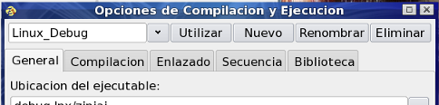
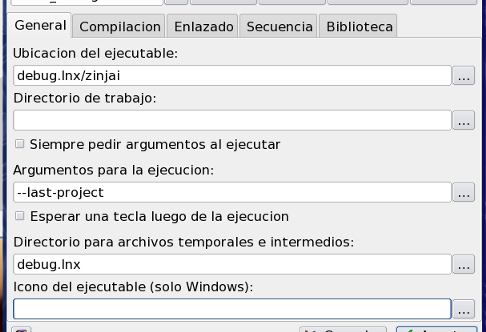
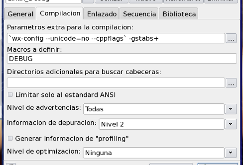
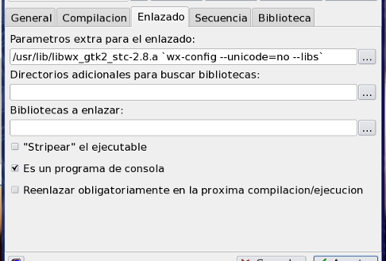
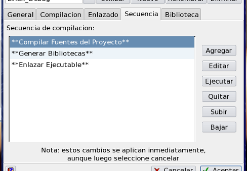
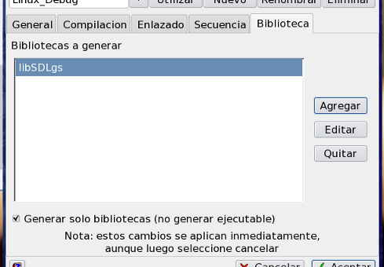

Diálogo Opciones de Compilacion y Ejecucion de Proyecto
Este diálogo permite gestionar los perfiles de compilación y ejecución de un proyecto. Se accede al mismo a travéz del comando Opciones del menú Ejecución. Si necesita configurar otras opciones no relacionadas a la compilación y ejecución (como tabulado, nombre, indices de autocompletado, archivo de macros de depuración, etc.), utilice el diálogo de Configuración de Proyecto.
En cada proyecto se pueden definir una o más configuraciones (por ejemplo, una para depuración y otra para produccion, o una por plataforma, etc.). Cada configuración define aspectos relativos a la compilación, el enlazado y la ejecución de un proyecto. Es decir, que cuando se compila o ejecuta un proyecto, las opciones que reciben el compilador y el enlazador y la forma en que este es ejecutado dependen de la configuración que se esté utilizando en ese momento.
Administración de configuraciones: Para administrar las diferentes configuracion debe utilizar los botones y la lista desplegable de la parte superior de la ventana:

- Añadir una nueva configuración: para agregar una nueva configuración debe utilizar el botón Nueva. Cuando presione dicho botón se le pedirá un nombre para la nueva configuración y se creará las misma, añadiendose a la lista desplegable, y copiando todos sus valores de la configuración que estaba seleccionada anteriormente; es decir, que en realidad se está creando un copia de una configuración anterior, y no una nueva configuración completamente en blanco.
- Utilizar un configuración: para utilizar una configuración debe seleccionarla y hacer click sobre el botón Utilizar. Notese que el echo de seleccionar una configuración en la lista desplegable no hace que esta sea la configuración a utilizar, sino que solamente muestra sus valores en las pestañas General, Compilación y Enlazado. Si hace click en el botón Aceptar dejando seleccionada en la lista desplegable una configuración que no es la que se está utilizando actualente, el sistema le preguntará si desea definirla como la configuración a utilizar antes de cerrar el diálogo.
- Renombrar una configuración existente: para cambiarle el nombre a una configuración seleccione la misma en la lista desplegable y presione Renombrar.
- Modificar una configuración existente: para modificar el contenido de una configuración existente debe seleccionarla en la lista desplegable, modificar los que desee.
- Eliminar una configuración: para eliminar una configuración seleccione la misma en la lista desplegable y presione Eliminar.
A continuación se detallan las opciones que se pueden definir dentro de cada configuración:
Pestaña General: define opciones generales y de ejecución del proyecto.

- Ubicacion del ejecutable: nombre o ubicación y nombre del ejecutable. Esta ruta puede ser absoluta o relativa al directorio del proyecto.
- Directorio de trabajo: directorio en cual se ejecutará el programa
- Siempre pedir argumentos al ejecutar: si esta opción está activada ZinjaI solicitará los argumantos que debe pasarle al ejecutable antes de cada ejecución.
- Argumentos para la ejecucion: argumentos que debe recibir el ejecutable del proyecto para su ejecución
- Esperar una tecla luego de la ejecucion: si esta opción está activa ZinjaI esperará a que presione Enter luego de ejecutar su programa para evitar que la ventana del mismo se cierre inmediatamente sin poder ver los resultados.
- Directorio para archivos temporales e intermedios: ubicación donde ZinjaI guardará los archivos intermedios de la compilación (objetos). El último directorio de esta ruta puede no existir, en cuyo caso será creado durante la primer compilación. Esta ruta puede ser absoluta o relativa al directorio del proyecto.
Pestaña Compilacion: define los parametros que se utilizan para la compilación.

- Parametros extra para la compilacion: aquí el usuario puede establecer libremente parámetros adicionales que ZinjaI utilizará para la compilación. Vea Ayuda del compilador utilizado.
- Macros a definir: permite ingresar una lista de macros de preprocesador (equivalentes a las definidas con #define en el código fuente) que serán utilizadas para la compilación de los fuentes (con el parámetro -D en gcc). El formato de ingreso es una lista separada por comas o espacios con los nombres y opcionalmente pegado el signo igual y el valor para dicha macro.
- Directorios adicionales para buscar cabeceras: permite definir uno o más directorios en los que el compilador debe buscar los archivos de cabecera incluidos en los fuentes. Los directorios de la lista pueden estar separados por coma, punto y coma o espacios y pueden ser absolutos o relativos al directorio del proyecto. Si desea agregar una ruta que contenga espacios puede encerrarla entre comillas dobles. Equivale a la utilización del parámetro "-I".
- Estandar: Permite elegir la versión del lenguaje C o C++ a utilizar (para especificar a gcc/g++ con el argumento -std=...). Elegir un estándar garantiza que el compilador cumple al menos con sus reglas, pero puede incluir extensiones. La casilla estricto permite desactivar las extensiones y limitarlo solo al estándar seleccionado (generando un error al querer utilizar alguna extensión, equivale al parámetro "-pedantic"). Los estándares "c++11" y "gnu++11" no están presentes en versiones de g++ menores a 4.7. Si ZinjaI detecta un versión menor a 4.7 los reemplazará por "c++0x" y "gnu++0x", por lo que el soporte para estos estándares podría ser incompleto.
- Nivel de advertencias: define la cantidad y el tipo de adevertencias/avisos que el compilador arrojará durante la compilación. Los niveles "Ninguna" y "Todas" equivalen a los parámetros -"w" y "-wAll" respectivamente. El nivel predeterminado no necesita ningún parámetro, ya que es el nivel predeterminado del compilador.
- Información de depuracion: determnia si el compilador incluye o no información de depuración en el ejecutable. Esta información es la que le permite al depurador reconocer qué linea de código se estaba ejecutando en determinado momento, la ubicación de las variables para evaluar sus expresiones, etc. Equivale a los parámetros "-g0", "-g1", "-g2" y "-g3". El nivel más comunmente utilizado para la depuración es el 2.
- Nivel de optimizacion: determina las optimizaciones que el compilador realiza durante la compilación. Estas optimizaciones permiten que el programa corra más rápidamente u ocupe menos espacio en disco. Equivale a los parámetros "-O0", "-O1", "-O2", "-O3" y "-Os". El nivel 2 es el más utilizado comunmente para producción. Nota: estas optimizaciones alteran a veces el flujo de control interno del programa, o eliminan determinadas instrucciones, por lo que no debería utilizarse cuando se pretende depurar el programa, ya que lo observado en el depurador puede no condecirse exactamente con lo escrito en el código fuente. Desde la versión 4.8 existe un nuevo nivel diseñado para depuración ("-Og"). Si selecciona esta opción pero su compilador no la soporta, ZinjaI lo reemplazará por "-O0".
Pestaña Enlazado: define los parametros que se utilizan para el enlazado.

- Parametros extra para el enlazado: aquí el usuario puede establecer libremente parámetros adicionales que ZinjaI utilizará para el enlazado. Vea Ayuda del compilador utilizado.
- Directorios adicionales para buscar librerias: permite definir uno o más directorios en los que el enlazador debe buscar los archivos de objetos de las librerías externas. Los directorios de la lista pueden estar separados por coma, punto y coma o espacios y pueden ser absolutos o relativos al directorio del proyecto. Si desea agregar una ruta que contenga espacios puede encerrarla entre comillas dobles. Equivale a la utilización del parámetro "-L".
- Bibliotecas a enlazar: define una lista de librerias externas a enlazar con los objetos del proyecto para crear el ejecutable. Los nombres de las librerías puede estar separados por coma, punto y coma, o espacios. Si desea incluir un nombre que contenga espacios puede encerrarlo entre comillas dobles ("nombre de archivo"). Equivale a la utilización del parámetro "-l".
- "Stripear" el ejecutable: esta opción extrae toda la información de depuración del ejecutable final luego del enlazado. De esta forma, se obtiene un ejecutable más pequeño. Equivale al parámetro "-s". Notar que aunque se haya definido que el compilador no debe incluir información de depuración al ejecutar, puede que alguna de las librerías enlazadas sí la contenga, por lo que esta opción resulta especialmente útil en este caso.
- Es un programa de consola: esta opción sólo tiene sentido en windows y determina si el programa generado utilza o no una consola. Si está desactivado se utiliza el parámetro "-mwindows"; lo cual permite ocultar la ventana negra si el programa crea su propia ventana. En sistemas Linux esta opción determina si al ejecutar el projecto ZinjaI muestra o no la ventana de la consola (runner); sin embargo esto no cambia el ejecutable, ya que linux no se hace distinción entre programas de consolas y programas de ventanas.
- Reenlazar obligatoriamente en la proxima compilacion/ejecucion: si se selecciona esta opción el ZinjaI reenlazará el ejecutable antes de la próxima ejecución aunque no se detecten cambios en sus fuente u objetos. Luego de reenlazar el proyecto, esta opción de desactiva automáticamente. Puede ser útil cuando un cambio en alguno de los parámetros de enlazado lo amerite.
- Icono del ejecutable: ruta completa o relativa a la carpeta de proyecto del archivo que se utilizará como ícono del ejecutable al compilar en Microsoft Windows. Este icono se compila mediante un archivo de recursos temporal.
- Archivo manifest.xml: ruta completa o relativa a la carpeta de proyecto del archivo que se utilizará como manifest para en Microsoft Windows. Este archivo se compila mediante un archivo de recursos temporal.
Pestaña Secuencia

Permite utilizar un toolchain alternativo, o alterar el proceso de construcción del proyecto insertando pasos adicionales. El proceso detallado, junto con las reglas que determinan cuando ejecutar estos pasos, se explica en la sección Secuencia de contrucción de proyectos. Estos pasos se utilizan, por ejemplo, para insertar llamadas a parsers de bibioteca específicas, compilación de recursos adicionales, etc. Cuando agregue o modifique un paso personalizado, lo hará mediante el Diálogo Agregar/Editar Paso de Compilación Personalizado. Consulte este enlace para encontrar una descripción más detallada de las propiedades de cada paso.
Pestaña Biblioteca

Permite definir bibliotecas que serán generada a partir de un subconjunto de fuentes del proyectos. Estas bibliotecas serán además enlazadas con el ejecutable final. Para generar una biblioteca, debe agregarla en esta lista y definir sus propiedades, y qué fuentes la componen, mediante el Diálogo Generar Biblioteca. Para comprender detalladamente la forma de compilación de las bibliotecas y cómo se integran en el proyecto consulte la sección Secuencia de contrucción de proyectos.
Por último, si el objetivo de su proyecto es sólamente construir una o varias bibliotecas, pero no un ejecutable, puede tildar la casilla "Generar solo bibliotecas". Esto evita que ZinjaI intente enlazar un ejecutable final.